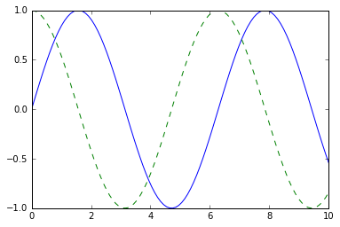
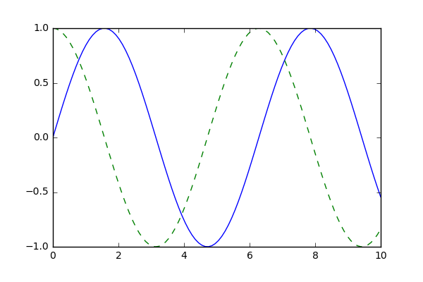
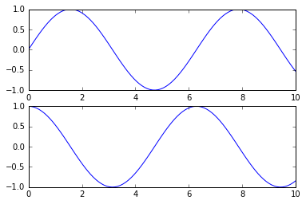

import numpy as np
import pandas as pd
1. Matplotlib 介绍
1.1 导入Matplotlib
plt 是 Matplotlib 最常用的接口
import matplotlib as mpl
import matplotlib.pyplot as plt
1.2 设置绘图样式
使用 plt.style.use 来选择图形的绘图风格
plt.style.use('classic')
1.3 关于 show() 方法
Matplotlib 是否使用 show() 方法取决于开发环境，一般而言有三种开发环境：1）script；2）IPython Shell；3）IPython Notebook
1.3.1 Script
如果在脚本文件中使用 Matplotlib，显示图形时必须使用 plt.show()。plt.show() 会启动一个 event loop，找到当前所有可用的图形对象，然后打开一个或多个交互式窗口文本。
需要注意，一个 Python session 中只能使用一次 plt.show()，因此通常把它放在脚本最后。
1.3.2 IPython Shell
在该开发环境下，可以通过 %matplotlib 魔法命令开启 Matplotlib 模式，此后不需要使用 plt.show() 了。开启 Matplotlib 模式后任何 plt 命令都会自动打开一个图形窗口，增加新的命令图形就会更新。有时一些变化不会自动及时更新，此时可以使用 plt.draw() 强制更新。
1.3.3 IPython Notebook
IPython Notebook 通过下面两种魔法命令可以使图片直接嵌入在 IPython Notebook 中：
%matplotlib notebook：在 Notebook 中启动交互式图形%matplotlib inline：在 Notebook 中启动静态图形
本文同一使用后者。
%matplotlib inline
x = np.linspace(0, 10, 100)
fig = plt.figure()
plt.plot(x, np.sin(x), '-')
plt.plot(x, np.cos(x), '--')
[<matplotlib.lines.Line2D at 0x7f801914f7f0>]

1.4 将图形保存为文件
使用 savefig() 命令将图形保存为文件，在 savefig() 中保存的图片文件格式就是文件的扩展名。可以通过 canvas 对象的方法查看系统支持的文件格式
fig.canvas.get_supported_filetypes()
{'eps': 'Encapsulated Postscript',
'jpg': 'Joint Photographic Experts Group',
'jpeg': 'Joint Photographic Experts Group',
'pdf': 'Portable Document Format',
'pgf': 'PGF code for LaTeX',
'png': 'Portable Network Graphics',
'ps': 'Postscript',
'raw': 'Raw RGBA bitmap',
'rgba': 'Raw RGBA bitmap',
'svg': 'Scalable Vector Graphics',
'svgz': 'Scalable Vector Graphics',
'tif': 'Tagged Image File Format',
'tiff': 'Tagged Image File Format'}
fig.savefig('fig.png')
!ls -lh
total 64
-rw-r--r-- 1 wanghaoming staff 913B Mar 7 17:23 MPL01.ipynb
-rw-r--r-- 1 wanghaoming staff 26K Mar 7 18:16 fig.png
IPython 的 Image 对象可以显示文件内容：
from IPython.display import Image
Image('fig.png')

2. 画图接口
Matplotlib 有两种画图接口：1）MATLAB 风格接口；2）面向对象接口。
2.1 Matlab 风格接口
Matlab 风格的工具位于 pyplot（plt）接口中。这种接口的特性是有状态性：它会持续跟踪当前的图形和坐标轴，所有的 plt 命令都可以应用。
plt.figure() # 1. 创建图形
plt.subplot(2, 1, 1) # 2. 设置子图的行、列、编号
plt.plot(x, np.sin(x))
plt.subplot(2, 1, 2)
plt.plot(x, np.cos(x))
[<matplotlib.lines.Line2D at 0x7f8058fb7bb0>]

2.2 面向对象接口
在面相对象接口中，画图函数不受当前活动图形或坐标轴的限制，而变成显示的 fig，ax 方法。
fig, ax = plt.subplots(2) # 创建图形和 Axes 对象
# print(ax)
# print(fig)
ax[0].plot(x, np.sin(x))
ax[1].plot(x, np.cos(x));